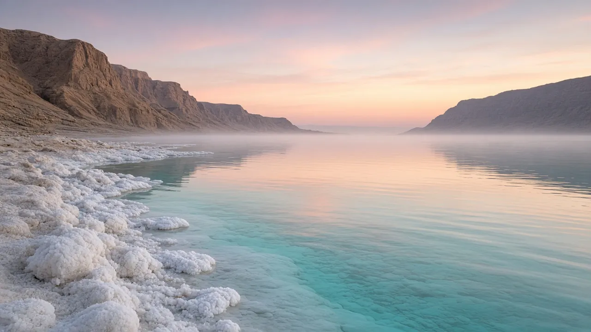
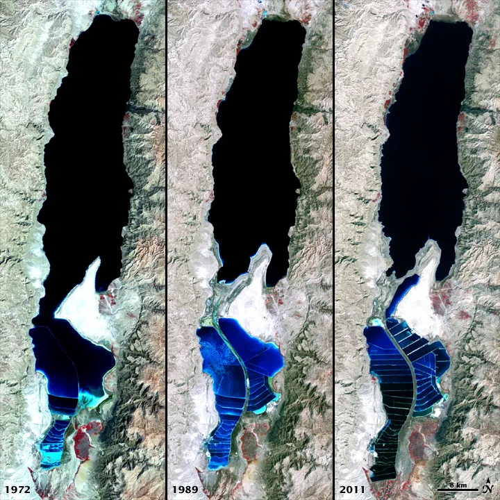

ים המלח: המקום הנמוך ביותר ביבשה
אגם מלוח בבקע, שהולך ומצטמק במהירות.
TODO machine-draft translation: English for review.

Artist’s interpretation — SI render made for Before Saving Planets; science per cited sources (not a photo).

NASA Earth Observatory, CC BY 2.0. File page

Born from a fault
The Dead Sea sits in a basin along the Dead Sea Transform, a fault where the Arabian Plate slides past the African (Sinai) Plate. The pull-apart basin let the land sink.
Lowest land on Earth
Its shore is the lowest land elevation on Earth, more than 430 meters (1,400 feet) below sea level — and getting lower.
Almost ten times saltier
With about 34% salt, the water is nearly ten times saltier than the ocean, so people float easily and almost no plants or animals live in it — only hardy microbes.
Shrinking fast
The water level has fallen more than a meter per year in recent decades as river water is diverted and minerals are extracted. Satellites show the southern part split off into evaporation ponds.
Sources
Keep digging: Continents on the MoveOceans: Earth’s Blue EngineSeas: Where Oceans Meet Land · Deep Time